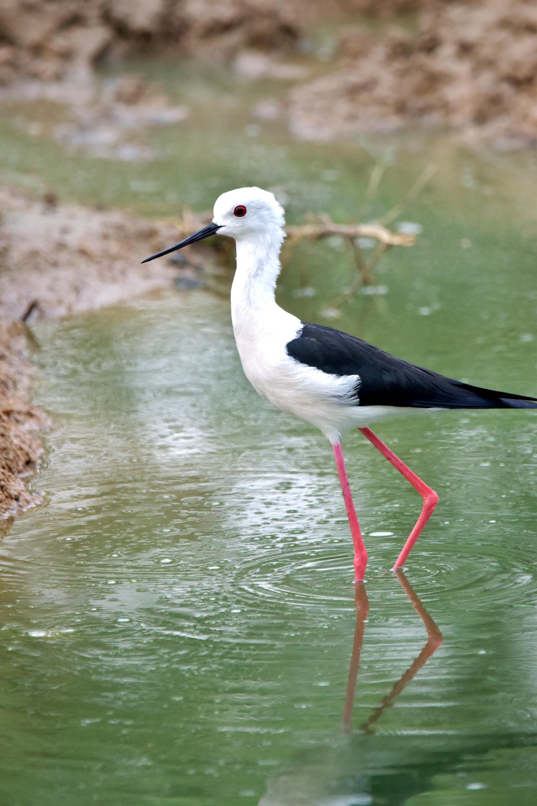

The Black-winged Stilt is a slender wader with extremely long pink legs, a thin black bill, and a striking black-and-white body. It is commonly found around shallow wetlands, lakes, marshes, flooded fields, mudflats, and other areas of shallow water, where it searches for small aquatic animals. Its unusually long legs allow it to wade through water that is deeper than that used by many other small waders. Compared with the Pied Avocet, the Black-winged Stilt has a straight bill rather than the Avocet's strongly upturned bill. The Little Ringed Plover is much smaller, has much shorter legs, and has a prominent eye-ring that the Black-winged Stilt lacks. The Common Sandpiper is also considerably smaller and has a brown-and-white plumage pattern rather than the Stilt's sharply contrasting black-and-white appearance. The Black-winged Stilt is also more slender and much taller than most small shorebirds that occur in the same wetlands. Its exceptionally long pink legs, narrow straight bill, and upright shape are therefore excellent identification features. Its habit of wading through shallow water further helps distinguish it from smaller shorebirds that usually remain closer to the water's edge.